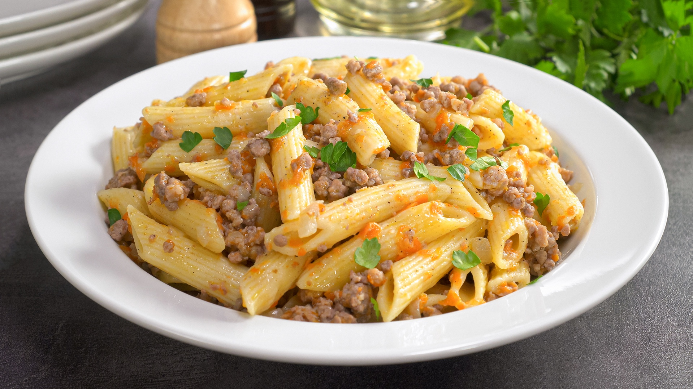

Navy Pasta

- 225g pasta
- 275g beef
- 175g onion
- 50g butter
- 3 tbsp. vegetable oil
- salt to taste
- black pepper to taste
- 1.25l water
- Cut the peeled onion into small cubes.
- Heat 1 tbsp in a frying pan. a spoonful of vegetable oil. Add chopped onion and fry, stirring, for 7-8 minutes until golden brown.
- After this, add 25 g of butter to the onion.
- Melt the butter and fry the onion for another 1-2 minutes over low heat until a pleasant creamy onion aroma appears.
- Cut the beef into pieces and pass through a meat grinder with a medium wire rack.
- Place the minced meat in a separate, well-heated frying pan. Constantly break the minced meat with a spatula so that no large lumps remain. Fry over medium-high heat until all the juices have evaporated and the mince turns grey, about 5 minutes.
After this, pour 1 tbsp into the frying pan with minced meat. a spoonful of vegetable oil, reduce the heat slightly and fry the minced meat until golden brown and a pleasant aroma of fried meat, another 7-8 minutes. During frying, do not salt or pepper the minced meat.
- Combine the prepared minced meat and fried onions. Add salt and pepper, stir and leave to brew a little.
- Bring water to a boil in a saucepan, add a pinch of salt. Place pasta in boiling water and cook until done according to package instructions, about 10 minutes. Place the boiled pasta in a colander to drain all the water and return to the pan.
- Add 25 g butter to the pasta. Mix.
- Add minced meat and onions to the pasta in the pan. Mix everything well.
- Place navy-style pasta on a plate and serve.